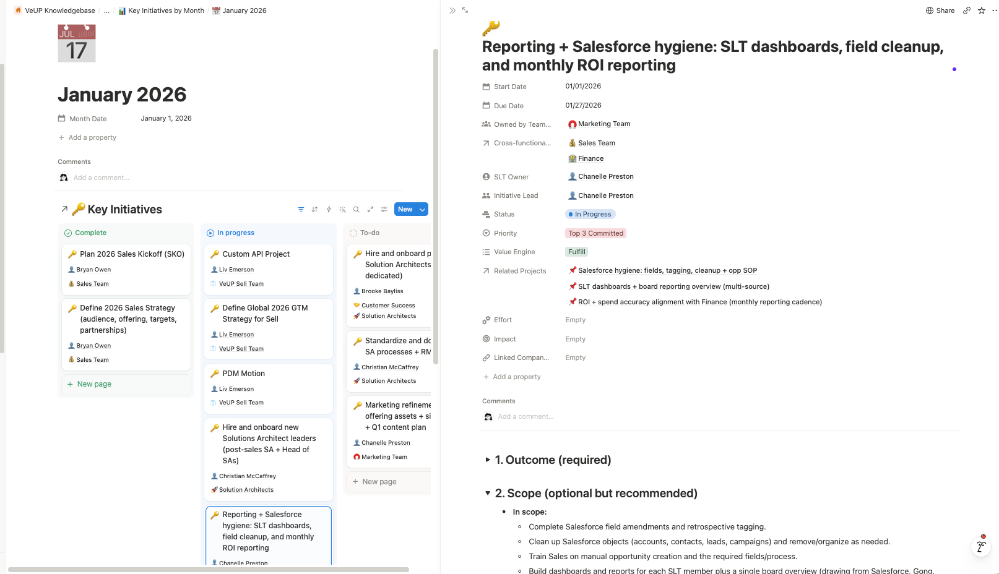
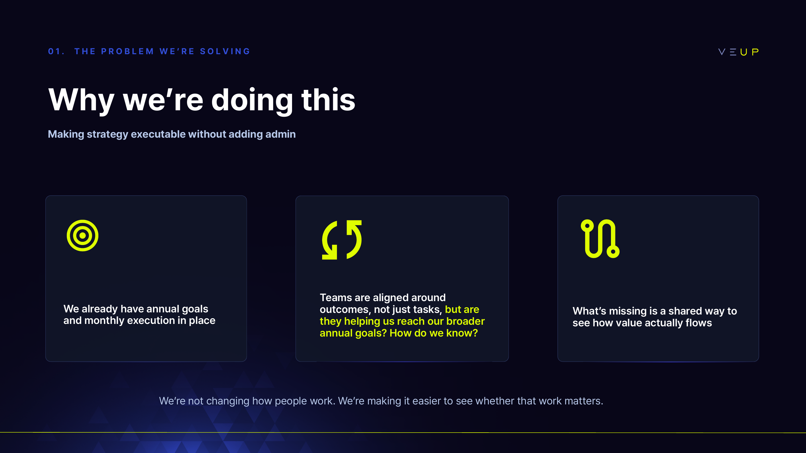
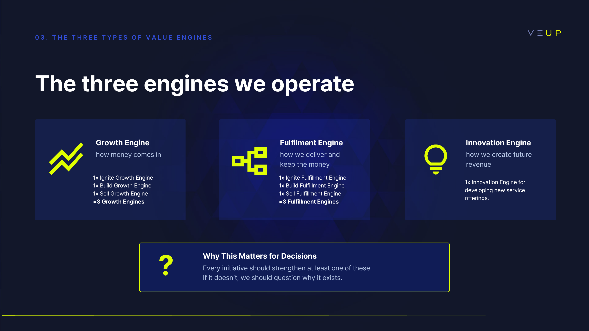
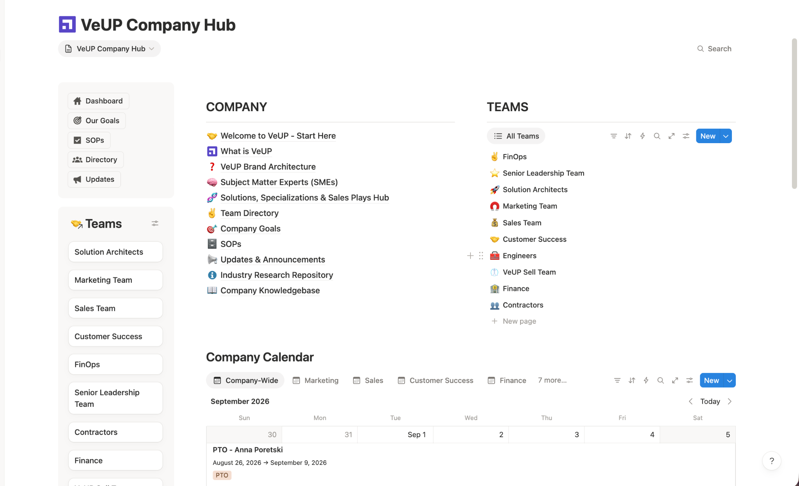
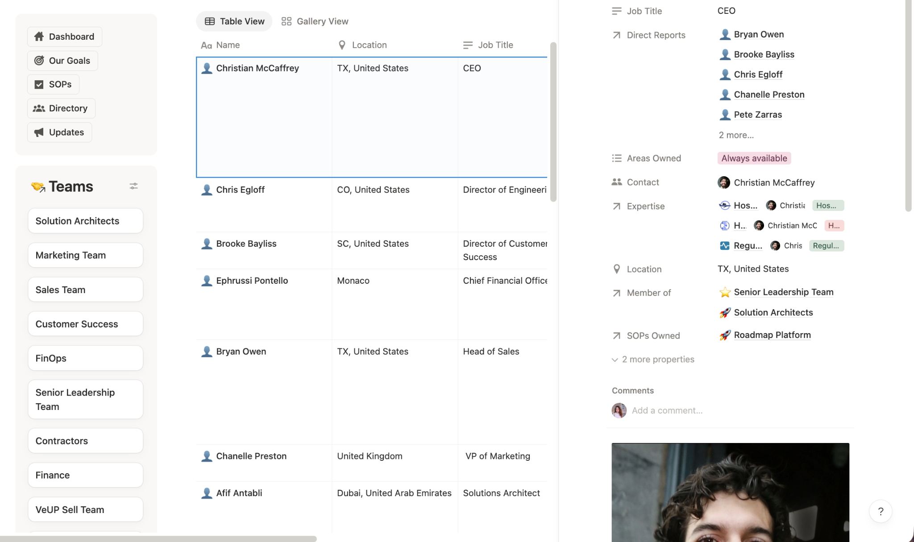
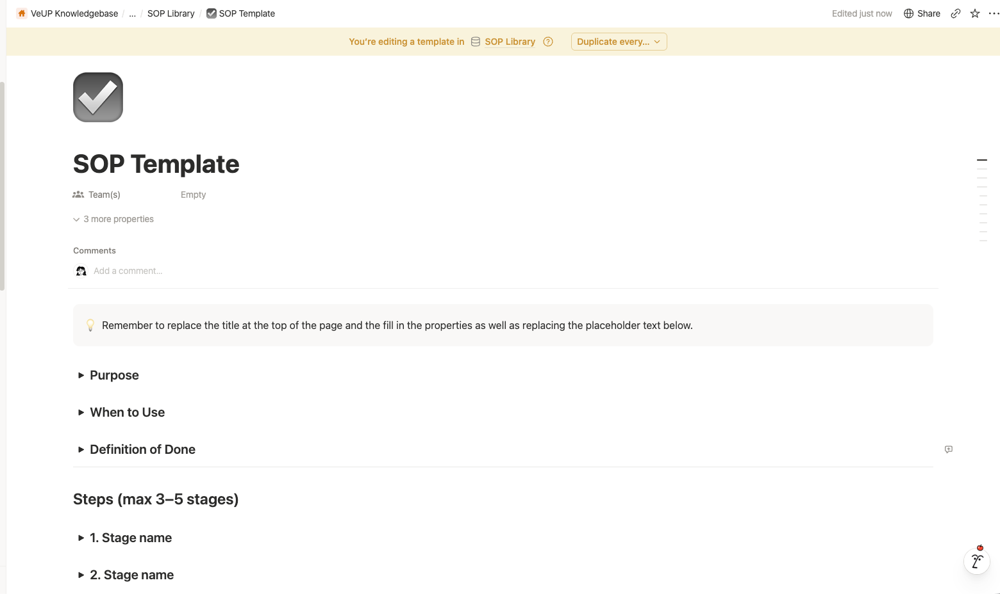
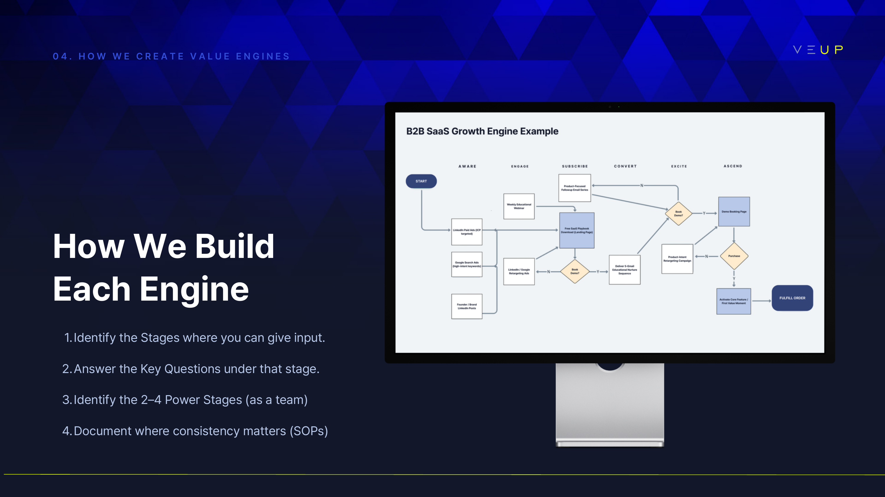
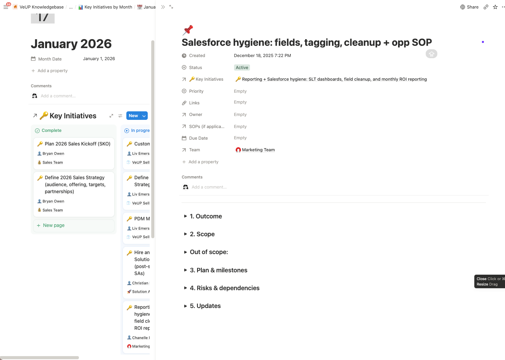
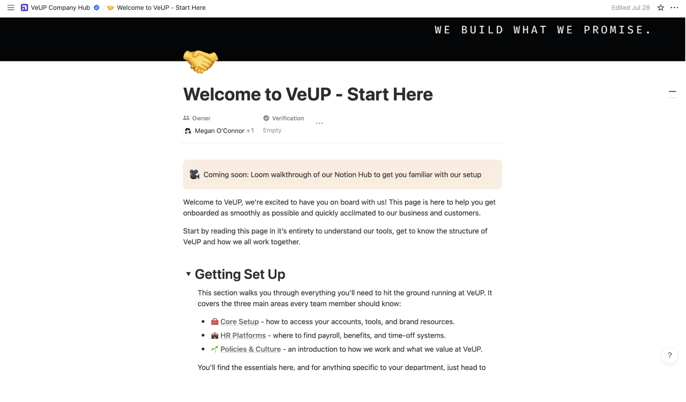

Operating-model design / Knowledge architecture / Leadership collaboration
Giving company priorities somewhere to live
VeUP’s work was spread across tools, documents and individual knowledge. I worked with the CEO and senior leadership to design a shared operating model, then built the Notion system that connected it to everyday work.
01 / At a glance
- Role
- Operating-model designer and systems implementation lead.
- Challenge
- Connect fragmented goals, projects and knowledge.
- Led
- Operating-model and information-architecture design with senior leadership.
- Delivered
- A connected Notion system, governance and reusable guidance.
- Supported
- Rollout through approximately five workshops and training sessions, with around ten leaders trained.

02 / The challenge
The context was there, but finding it took work
Information lived in private folders, presentations, documents, Slack conversations and people’s memories. Employees often had to reconstruct why something mattered before they could act on it. Leadership priorities were difficult to follow through to active projects.
A shared workspace needed to make those relationships visible. Simply giving the documents a tidier home wouldn’t resolve how priorities, ownership and delivery fitted together.
03 / The approach
Start with how the company works
I designed the operating model before building the workspace. Working with the CEO and senior leadership, I defined a structure linking company goals to the teams and work responsible for delivering them.
I drew on business-leadership study, experience running my own company and principles from Lean, OKRs, EOS and Value Engines, combining the elements that suited VeUP.
Company goals → Value Engines → teams → key initiatives → projects → SOPs → daily tasks
Three annual company goals connected to Growth, Fulfilment and Innovation Value Engines, then to team priorities, projects and owners. That structure gave the workspace its purpose.


04 / System architecture
One set of information, different views of the work
I built the Notion system around connected databases. A team could see the information relevant to its work while retaining the links to wider goals and initiatives.
The architecture brought together people, priorities, projects, knowledge and standard operating procedures, with ownership, dates, status and reusable templates. Those connections made it possible to follow a priority through to the work beneath it.
Connected workspace
Knowledge
A shared route to processes, resources and current information.

Connected workspace
Teams & people
10 team hubs, 34 employee pages and contextual calendar views.

Connected workspace
Processes
A governed SOP library and templates teams could maintain themselves.

05 / Adoption and ownership
Making it usable without making myself indispensable
The system needed people who could maintain it. I worked with leadership to align goals and initiatives, establish responsibilities for review and upkeep, and create guidance teams could use themselves.
The rollout included approximately ten team hubs, around ten leaders trained and approximately five leadership workshops and training sessions.
I developed the system for a company of roughly 34 employees plus contractors.
Workshops + individual training
Leadership enablement

Review cadence + ownership rules
Governance built in

Onboarding + reusable guidance
Self-service by design

06 / What changed
What changed
Delivered: A shared structure connecting company priorities with work, ownership and knowledge, supported by governance and training.
Context, ownership and status became easier to inspect within the workspace. Leadership could see more clearly how active work related to priorities, while teams had a shared structure for managing their work.
07 / What it demonstrates
What this project demonstrates
My ability to connect company strategy to everyday work through shared visibility, clearer priorities and better communication, helping teams collaborate, avoid duplicated effort and work towards shared goals.